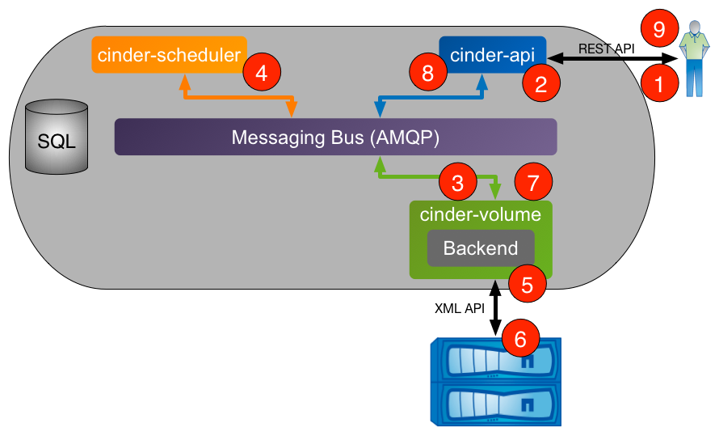

Process Structure¶
There are four processes that make up the Cinder service:
cinder-apiis an WSGI application that accepts and validates REST (JSON or XML) requests from clients and routes them to other Cinder processes as appropriate over AMQP.cinder-schedulerdetermines which backend should serve as the destination for a volume creation or movement request. It maintains non-persistent state for backends (e.g. available capacity, capabilities, and supported extra specs) that can be leveraged when making placement decisions. The algorithm utilized by the scheduler can be changed through Cinder configuration.cinder-volumeaccepts requests from other Cinder processes and serves as the operational container for Cinder drivers. This process is multi-threaded and typically has one thread of execution per Cinder backend as defined in the Cinder configuration file.cinder-backuphandles the interaction with potential backup targets (e.g. a file store exported via NFS or an OpenStack Object Storage Service (Swift)) when a client requests a volume backup or restore operation.

Figure 4.2. Cinder Processes Concept Diagram
Volume Creation Workflow¶
The following section walks through the steps that occur when a user requests the creation of a new volume from Cinder.

{kind=link}
Figure 4.3. Cinder Workflow - Volume Creation
- Client issues request to create volume through invoking REST API
(client may use
python-cinderclientCLI utility). cinder-apiprocess validates request, user credentials; once validated, puts message onto AMQP queue for processing.cinder-volumeprocess takes message off of queue, sends message to cinder-scheduler to determine which backend to provision volume into.cinder-schedulerprocess takes message off of queue, generates candidate list based on current state and requested volume criteria (size, availability zone, volume type (including extra specs)).cinder-volumeprocess reads response message fromcinder-schedulerfrom queue; iterates through candidate list by invoking backend driver methods until successful.- NetApp Cinder driver creates requested volume through interactions with storage subsystem (dependent on configuration and protocol).
cinder-volumeprocess collects volume metadata and connection information and posts response message to AMQP queue.cinder-apiprocess reads response message from queue and responds to client.- Client receives information including status of creation request, volume UUID, etc.
Volume Attach Workflow¶
The following section walks through the steps that occur when a user requests that a Cinder volume be attached to a Nova compute instance.
{kind=link}
- Client issues request to attach volume through invoking Nova REST API
(client may use
python-novaclientCLI utility). nova-apiprocess validates request, user credentials; once validated, invokes Cinder API to get connection information for specified volume.cinder-apiprocess validates request, user credentials; once validated, posts message to volume manager over AMQP.cinder-volumereads message from queue, invokes Cinder driver corresponding to volume to be attached.- NetApp Cinder driver prepares Cinder volume in preparation for attachment (specific steps dependent on storage protocol used).
cinder-volumeprocess posts response information tocinder-apiprocess via AMQP queue.cinder-apiprocess reads response message fromcinder-volumefrom queue; passes connection information in RESTful response to Nova caller.- Nova creates the connection to the storage with the returned information from Cinder.
- Nova passes the volume device/file to the hypervisor, who then attaches the volume device/file to the guest VM as an actual or virtualized block device (dependent on storage protocol).
Volume Backup Workflow¶
The following section walks through the steps that occur when a user requests that a Cinder volume be backed up.
{kind=link}
- Client issues request to backup a Cinder volume by invoking REST API
(client may use
python-cinderclientCLI utility). cinder-apiprocess validates request, user credentials; once validated, posts message to backup manager over AMQP.cinder-backupreads message from queue, creates a database record for the backup and fetches information from the database for the volume to be backed up.cinder-backupinvokes thebackup_volumemethod of the Cinder volume driver corresponding to volume to be backed up, passing the backup record and the connection for the backup service to be used (NFS, Swift, etc.)- The appropriate Cinder volume driver attaches to the source Cinder volume.
- The volume driver invokes the
backupmethod for the configured backup service, handing off the volume attachment. - The backup service transfers the Cinder volume’s data and metadata to the backup repository.
- The backup service updates the database with the completed record for
this backup and posts response information to
cinder-apiprocess via AMQP queue. cinder-apiprocess reads response message from queue and passes results in RESTful response to the client.
Volume Restore Workflow¶
The following section walks through the steps that occur when a user requests that a Cinder backup be restored.
- Client issues request to restore a Cinder volume by invoking REST API
(client may use
python-cinderclientCLI utility). cinder-apiprocess validates request, user credentials; once validated, posts message to backup manager over AMQP.cinder-backupreads message from queue, fetches the database record for the backup and a new or preexisting volume database record, depending on whether a preexisting volume was requested or not.cinder-backupinvokes thebackup_restoremethod of the Cinder volume driver corresponding to volume to be backed up, passing the backup record and the connection for the backup service to be used (NFS, Swift, etc.)- The appropriate Cinder volume driver attaches to the destination Cinder volume.
- The volume driver invokes the
restoremethod for the configured backup service, handing off the volume attachment. - The backup service locates the backup metadata and data for the Cinder volume in the backup repository and uses these to restore the destination Cinder volume to a state matching the source volume for the original backup operation at the time of that operation.
- The backup service posts response information to
cinder-apiprocess via AMQP queue. cinder-apiprocess reads response message fromcinder-backupfrom queue and passes results in RESTful response to the client.
This document is licensed under Apache 2.0 license.